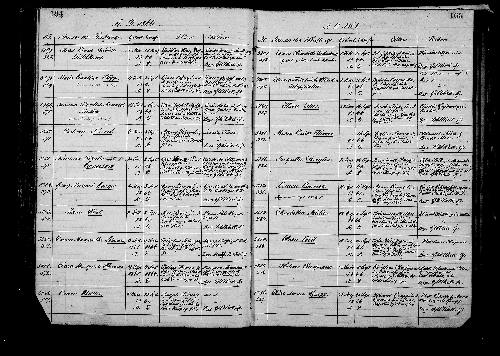
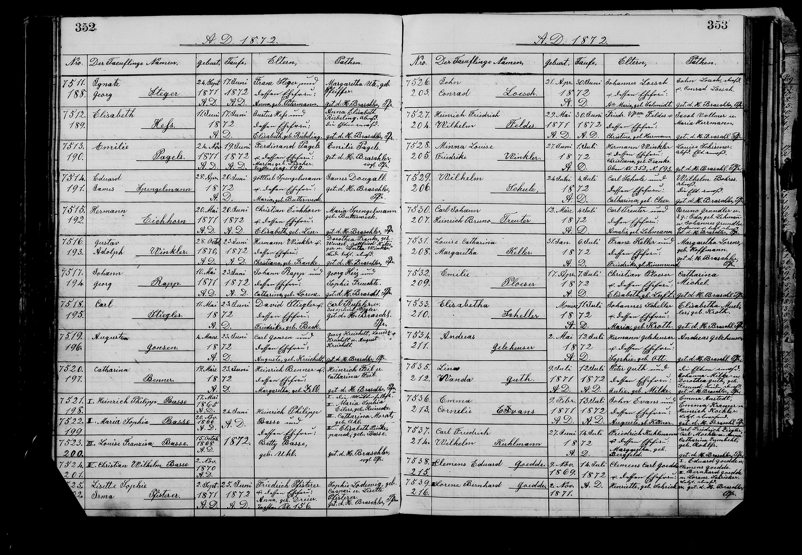

★ At a Glance
Charles's mother-in-law — Auguste's mother. She sponsored three of Charles and Auguste's seven baptisms.
Researcher view (sources, citations, bottom-line)
Louise Friederike "Henriette" Weiss (1820, Clausthal) was Charles's mother-in-law and the matriarch of the eight-child Kreichelt-Kreigelt St. Louis household. She married Georg Andreas Kreigelt in 1844 in Clausthal; emigrated 1853. She sponsored three Gannsen baptisms — 1866 (firstborn, recorded as "Henriette"), 1872 (Auguste, recorded as "Louise" using her formal first name), and 1873 (Louise, recorded as "Louise Henriette Kreichelt née Weis" — the granddaughter named directly for her). The three different-name renderings across the same person are a worked example of 19th-c. parish-clerk name-form variation.
Family tree — Kreichelt clan (Clausthal & St. Louis)
Louise Friederike Henriette Weiss (commonly recorded under "Henriette" in family use, "Louise" in formal St. Marcus parish records) was the matriarch of the Hannover-born Kreichelt clan in St. Louis. Her name-form switching is itself documented in the Gannsen baptism series — in 1872 she signed as "Louise Kreichelt" sponsor at the baptism of granddaughter Auguste Gonsen, while the 1873 St. Marcus clerk recorded her as "Louise Henriette Kreichelt née Weis." She lived to age 74 and outlived husband Georg by eleven years. FS LZXC-NG7.
Quick facts
| Canonical name | Henriette Weiss (FamilySearch tree person name) |
| Full baptismal name | Louise Friederike "Henriette" Weiss — per the Clausthal baptism record (the order of names; "Henriette" used as the personal/call name) |
| American married name | Louise Henriette Kreichelt née Weis — recorded thus at the 1873 baptism of her granddaughter Louise Gannsen, where she stood as sponsor |
| Born | 18 February 1820, Clausthal, Hannover (3 sources) |
| Christened | 5 March 1820, Clausthal, Hannover |
| Died | 15 August 1894, St. Louis City, Missouri, United States — aged 74 |
| Buried | 17 August 1894, Old Picker's Cemetery, St. Louis, Missouri (with her husband Georg, who had died eleven years earlier) |
| Father (foster relationship) | Johann Heinrich Ludwig Wiese (1791–1865) · MH8D-X9F — listed as "Foster" parent on the FamilySearch tree, per the unusual chronology: Henriette was born in February 1820 and her parents married seven months later in September 1820, suggesting she was born to her mother before the marriage was formalized |
| Mother | Louise Friederike Peinemann (1791–1874) · LB25-QGP — Henriette's namesake (the "Louise Friederike" of her full baptismal name) |
| Parents' marriage | 14 September 1820, Clausthal, Zellerfeld, Hannover, Prussia, Germany — seven months after Henriette's birth |
| Sibling | Carl Heinrich Wilhelm Ludwig Weiss (1825–1855) · LBG6-G9R — died young |
| Husband | Georg Andreas Kreigelt (1819–1883) · LZXC-NH9 |
| Marriage | 8 April 1844, Clausthal, Hannover, Germany |
| Children (8) | August Kreichelt (1844–1877) · L5FW-572 — Battery B veteran, husband of Maria Emma Mincke · Charles "Carl" Heinrich Kreichelt (1846–1926) · L5FW-5LD · Auguste Kreichelt (1847–1896) · LZKV-9F5 — Charles Gannsen's wife · Carl Wilhelm Christian Hermann Kreichelt (1849–Deceased) · LY2X-81T · Caroline Auguste Dorette Kreigelt and three more |
| Residences | 1860 St. Louis · 1870 St. Louis · St. Louis City through her 1894 death (no Edwardsville or out-of-state residence on record) |
| FamilySearch profile | LZXC-NG7 · 20 attached sources · 19 memories |
Where this sponsor appears in the parish register
The 3 St. Marcus parish-register entries where this sponsor appears across the seven Gannsen baptisms.



Connection to Charles Gannsen & the Gannsen baptisms
★ Sponsor at TWO Gannsen baptisms · 1866 firstborn AND 1873 Louise
Henriette appears as sponsor at two of the seven Gannsen baptisms — putting her alongside Friedrich Pillmann as one of the only two recurring sponsors across the seven-baptism series:
- 1866 · Friedrich Wilhelm Gonnson — alongside her husband Georg, Friedrich Pillmann, and Wilhelmine Ebeling Leue. Henriette and Georg's appearance as the maternal grandparents of the firstborn is the standard Lutheran-Evangelical default.
- 1873 · Louise Gansen / Louise Foster — alongside her daughter-in-law Barbara Kreichelt. The granddaughter Louise Gannsen is named directly after Henriette: the 1873 St. Marcus parish clerk recorded the sponsor as "Louise Henriette Kreichelt née Weis," using Louise as the personal name in this entry — and the namesake granddaughter was christened with the matching personal name Louise. The "Louise" — taken from Henriette's full baptismal "Louise Friederike Henriette" — became the granddaughter's call name and persisted into adulthood; she lived to 1947 as "Louise Foster."
Recorded under different given names at different baptisms
The 1866 and 1873 St. Marcus parish clerks recorded Henriette under different forms of her full baptismal name Louise Friederike Henriette:
- 1866: simply Henriette Kreichelt (the family's call name for her)
- 1873: Louise Henriette Kreichelt née Weis (formal naming, calling her by the first name in her baptismal record)
This is one of several instances of "the same person under multiple parish-clerk names across different Gannsen baptism entries" in the 1860s–1880s St. Marcus register. Reconciling the names against the FamilySearch tree person LZXC-NG7 confirms a single individual. The "Louise Friederike Henriette Weiss" full-name reading was solidified by Jed in November 2021 from the Clausthal baptism record itself.
Mother-in-law to Charles for 28 years · 1866–1894
Henriette outlived her husband Georg by eleven years and Charles by nine years (Charles died December 1903; Henriette died August 1894). Across the 28-year stretch from her daughter Auguste's 1866 wedding to her own death she would have been a continuous presence in the Gannsen household — the maternal grandmother to seven Gannsen grandchildren, the matriarch of the broader Kreichelt-Albrecht-Pillmann-Mincke kin network in St. Louis, and (per the existing Charles Gannsen pension records) likely a frequent St. Louis German-Evangelical congregational presence at Charles & Auguste's adjacent St. Marcus residences.
Her residence in St. Louis through 1860 and 1870 census records, and her burial alongside Georg at Old Picker's Cemetery, confirm that the Kreichelt-Kreigelt family did not relocate during her widowhood — she remained in the same St. Louis German-Evangelical orbit Charles & Auguste lived in.
📂 Full research log
Significance to the broader investigation
- Naming pattern across generations. Henriette's daughter Auguste was named for her aunt (Georg's sister Juliane Auguste Henriette). Henriette's granddaughter Louise Gansen (1873) was named directly after Henriette herself. This three-generation chain of name-handoff — Juliane Auguste Henriette → Auguste → Louise — is a typical Hannoverian-Lutheran practice of preserving the maternal-line name across alternating generations.
- Pre-marital birth chronology is documented. Henriette was born 18 February 1820 and her parents married 14 September 1820 — seven months later. The FamilySearch tree records the relationship to her father Johann as Foster, indicating that he likely was not her biological father but raised her as his own after marrying her mother. (The alternative is that he was her biological father and the parents simply formalized the marriage seven months after her birth, which was relatively common in 1820s Hannoverian Lutheran practice.) Either way Henriette grew up in the Wiese-Peinemann household and was christened in Clausthal in March 1820.
- The Hannoverian half is fully resolved. With Henriette's record alongside her husband's, the Hannoverian half of Auguste's St. Louis-Hannoverian-American household is now fully documented at FamilySearch — both vital records, Clausthal Lutheran parish records, the 1853 emigration, the St. Louis residences, and the burial at Old Picker's Cemetery.
Sources & cross-references
- FamilySearch · Henriette Weiss (LZXC-NG7) · 20 sources
- Clausthal Lutheran parish baptism register, 5 March 1820 — source of the full baptismal name Louise Friederike Henriette Weiss (Jed's 13 Nov 2021 attribution)
- Clausthal Lutheran parish marriage register, 8 April 1844 (Georg Kreigelt × Henriette Weiss)
- St. Marcus baptism register · 1866 firstborn entry · sponsor "Henriette Kreichelt"
- St. Marcus baptism register · 1873 Louise entry · sponsor "Louise Henriette Kreichelt née Weis"
- Old Picker's Cemetery burial records, 17 August 1894
- → 1866 Friedrich Wilhelm baptism page · → 1873 Louise baptism page
- → Georg Andreas Kreigelt (her husband) · → Carl Kreichelt (her son)